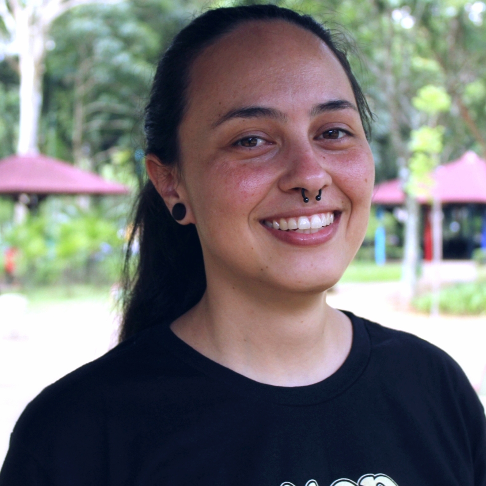

Bia Coelho
Sou fã de Rock e estudante de Análise e Desenvolvimento de Sistemas - Fatec Mogi das Cruzes. Criei esse blog para treinar meus conhecimentos de HMTL5/CSS3.
"Eu tenho uma alma que é feita de sonhos."